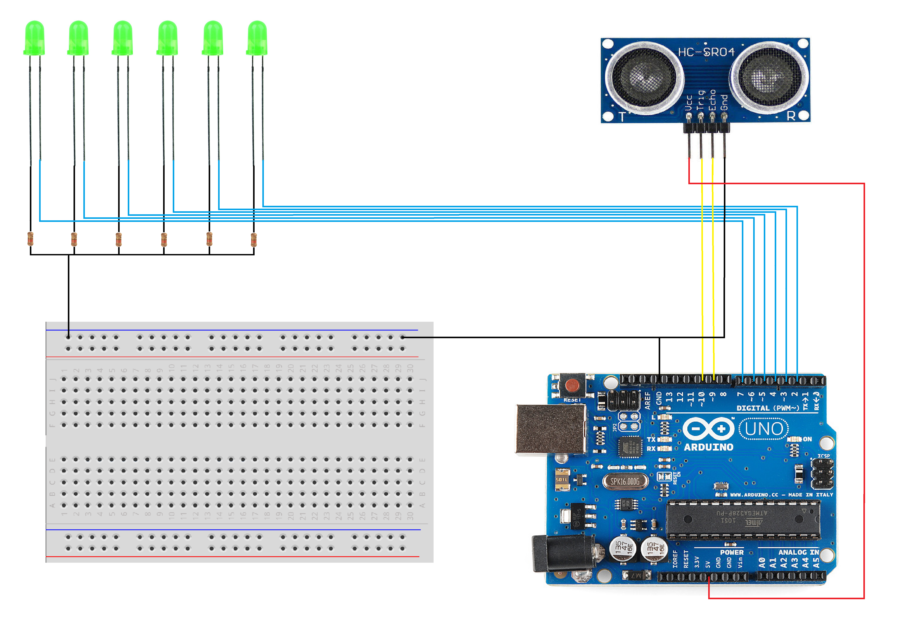

Date Created: March 23, 2019
Programming Languages and Techniques Used:
This was an intro LED project. I used a sonar ultrasonic distance sensor to control a panel of LED lights. The ultrasonic sensor sends out an echo signal which can be converted into a measure of distance. Using this distance, I was able to control the number of LED's to turn on in sequence. The following components are required for this project:
Schematic:
Demo: